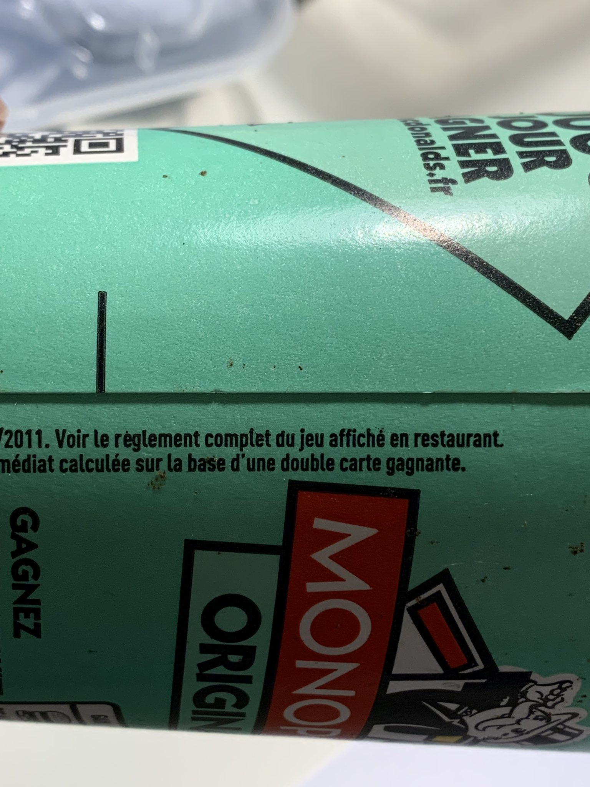
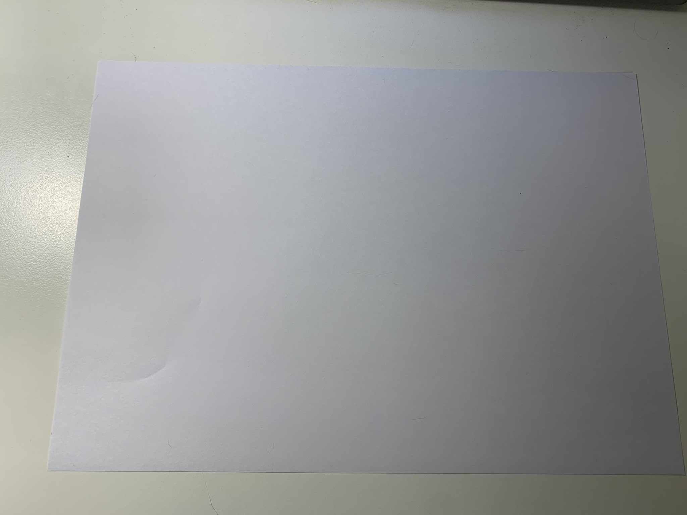
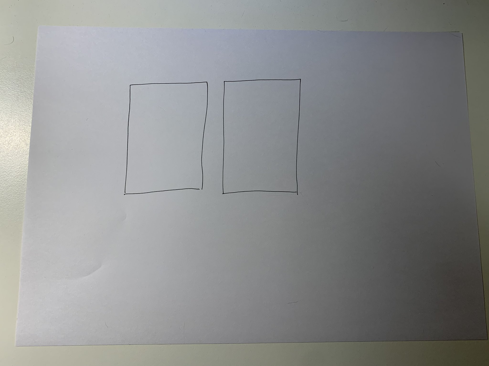

Explications envoyées à Constant Méheut

DE : Vincent Le Corre
À : Constant Méheut
EXTRAIT DES EXPLICATIONS ENVOYÉES LE 25 MAI 2022 ENTRE APPROXIMATIVEMENT 19:36 ET 20:05 (HEURE DE PÉKIN) À CONSTANT MÉHEUT PAR MESSAGERIE DIRECTE VIA TWITTER
[…]
Il y a également d’autres documents qui prouvent que le Monopoly a un effet considérable sur les ventes. Dans un secteur aussi compétitif que la restauration, si l’on prouve que le jeu était une escroquerie (et pas l’escroquerie mentionnée dans cet article ⬆️) mais une autre, selon moi, McDonald’s peut couler. Tout simplement.
Je commence [avec] un exemple d’escroquerie que vous devriez comprendre relativement facilement vu votre intelligence:

McDonald’s en France en 2011, prétendait que les consommateurs avaient 1 chance sur 4 de gagner tout de suite ⬆️

Mais en petits caractères difficilement lisibles, surtout lorsqu’il y a des boissons excellentes pour la santé comme du Coca-Cola et que l’on ne peut pas mettre son gobelet horizontalement pour lire ce qu’ils ont écrit verticalement, il est écrit que la base du calcul est une « double carte gagnante »
Sauf qu’il y a un problème: si la base du calcul est gagnante, vous avez forcément gagné! C’est sûr à 100%
C’est logique. Mais pour mieux comprendre, ignorons un instant l’affirmation 1 chance sur 4. Concentrons nous sur la base du calcul: une double vignette gagnante.
C’est quoi une double vignette gagnante exactement?
Prenez un bout de papier 📄

Puis dessinez 2 vignettes:

Puis vous écrivez dans l’une des deux vignettes « vignette gagnante » (moi j’avais écrit “winning sticker” car je faisais la démonstration a des amis américains […]):

Puis vous prenez une paire de ciseaux ✂️

Et vous découpez les 2 vignettes.
Et vous mettez les deux vignettes dans l’une de vos mains:

Imaginez que c’est votre main ⬆️, posez-vous la question suivante: quelle est la probabilité de gagner?
Ignorez l’affirmation initiale de McDonald’s. Pensez seulement à cette photo ⬇️

Quelle est la probabilité de gagner Monsieur Méheut?
LA RÉPONSE DE CONSTANT MÉHEUT REÇUE LE 27 MAI 2022 à 00:10 (HEURE DE PÉKIN) PAR MESSAGERIE DIRECTE VIA TWITTER :
Bonjour M. [Nom de la victime]
je m’excuse de ma réponse tardive, je suis assez pris en ce moment. J’ai rapidement regardé ce que vous m’avez envoyé et c’est très interessant. Donnez moi le temps d’y revenir demain et je vous recontacte.
Il me répondra de nouveau par email le 31 mai 2022 dans lequel il affirme avoir bien compris la fraude “une chance sur quatre”:
NOTE SPÉCIALE TEMPORAIRE POUR LES LECTEURS : J’ai besoin d’écrire plus d’explications. Mais pour l’instant, pour bien comprendre pourquoi McDonald’s a commis une fraude, vous devez savoir que McDonald’s a menti sur l’affirmation “1 chance sur 4 de gagner instantanément”.
Quelle était la probabilité réelle ? Était-ce ce qui était écrit en petits caractères ? Ce qui est écrit en minuscules signifie que les consommateurs avaient 1 chance sur 2.
Mais McDonald’s a aussi menti sur le “1 chance sur 2”, les consommateurs n’avaient pas “1 chance sur 2”.
Ce n’était ni “1 chance sur 4” ni “1 chance sur 2”.
C’était combien alors ? En moyenne, seulement 1 vignette sur 8 était une vignette instantanément gagnante. Il y a donc une déviation quadruple par rapport à l’affirmation initiale de McDonald’s et cela constitue donc une escroquerie aggravée.
Je donnerai plus d’explications très bientôt, mais c’est l’une des plus grandes fraudes de l’histoire ! C’est la fraude du siècle !